第 3 章 2022-09-30
根据2007ShiJian，做一个高维线性模型的模拟，其中\(X_{ij}\)的取值参考2020ChangJY。
3.1 模拟结果
\[Y = X^\mathsf{T}\beta + \epsilon\]
\(n\)表示样本个数
- \(n = 200,400,800\)
\(p\)表示样本维数
- \(p=cn^{index}\)
- \(index=0.16,0.24,0.4\)
- \(c = 3,4,5\)
\(X_i \sim N(0,\Sigma_{p}), \Sigma_{p}=(\sigma_{ij})_{p \times p}\)
\(\sigma_{ij}=I(i=j)+0.5I(i \neq j)\)
\(I(x \in \omega)= \left\{ \begin{aligned} \nonumber 1,& x \in \omega,\\ 0,&x \notin \omega.\\ \end{aligned} \right.\)
 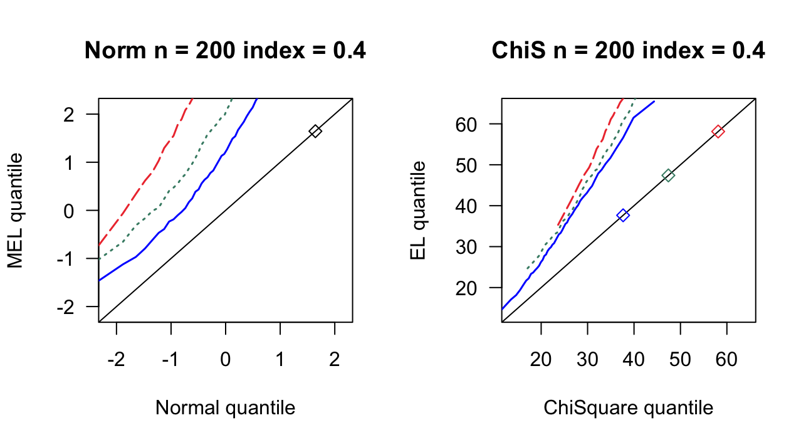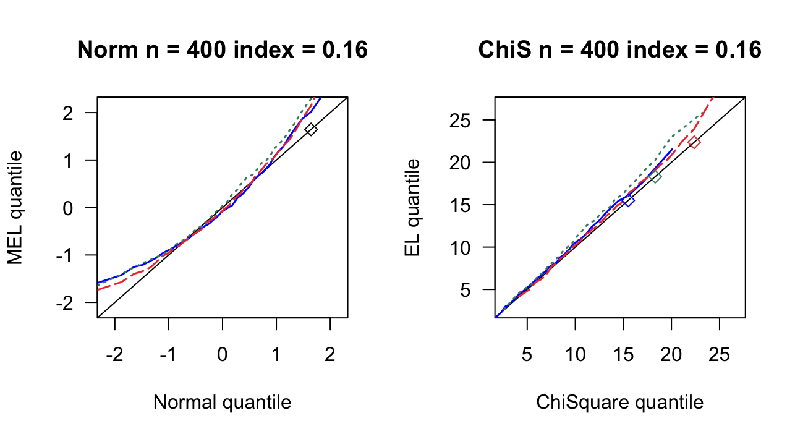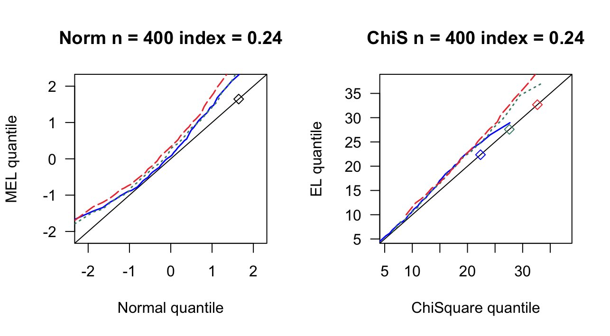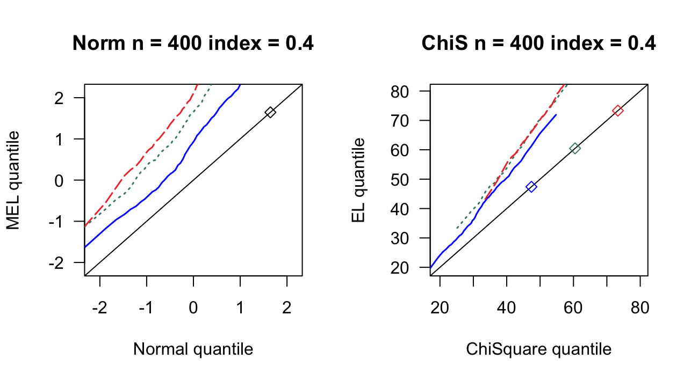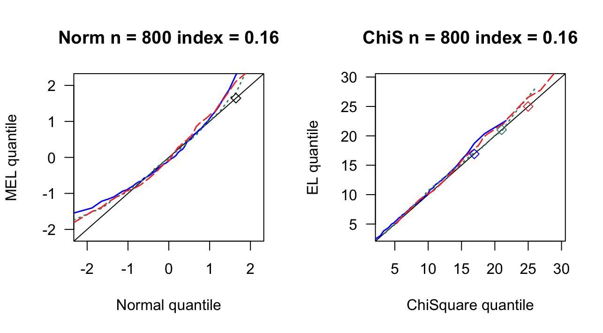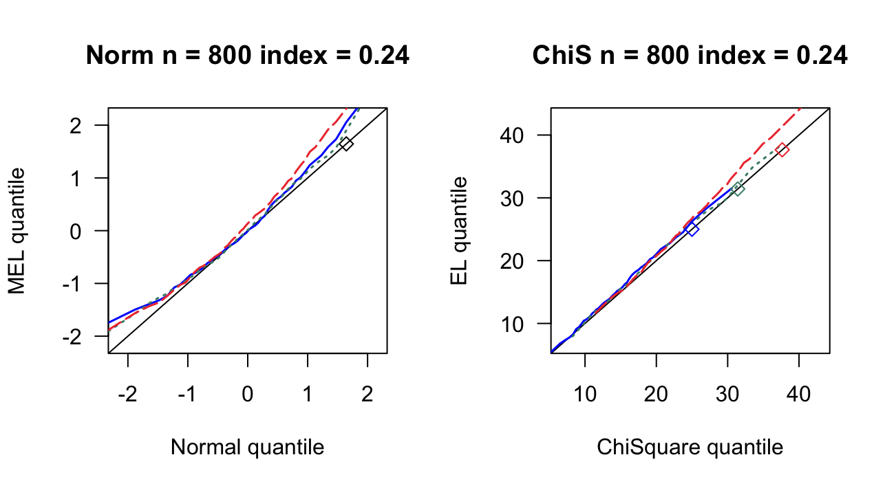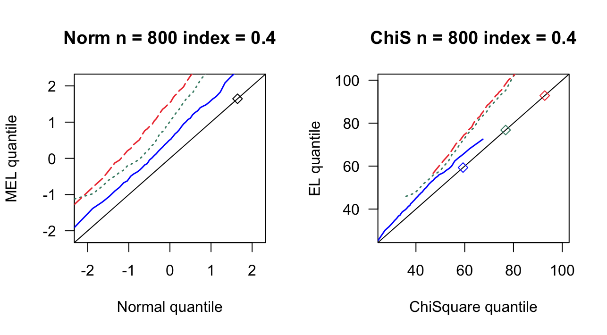
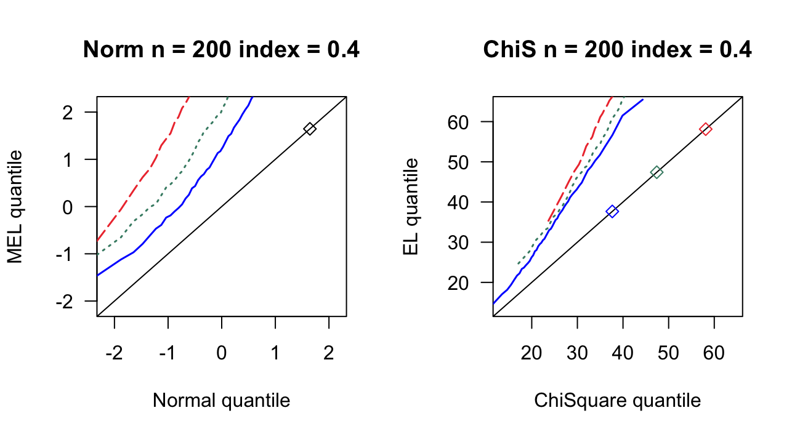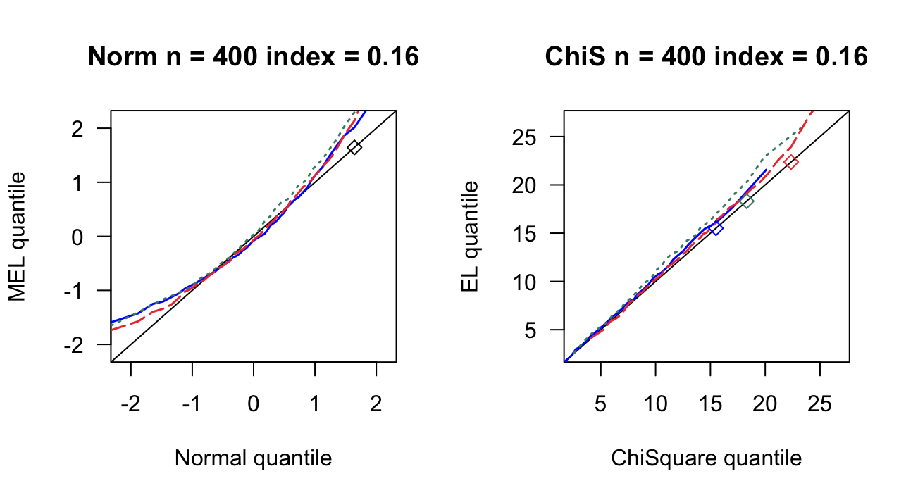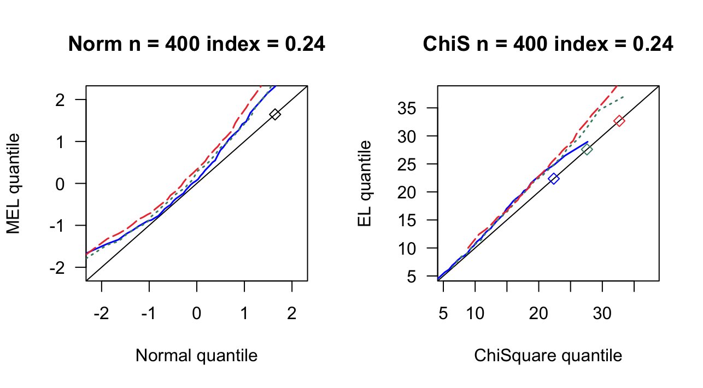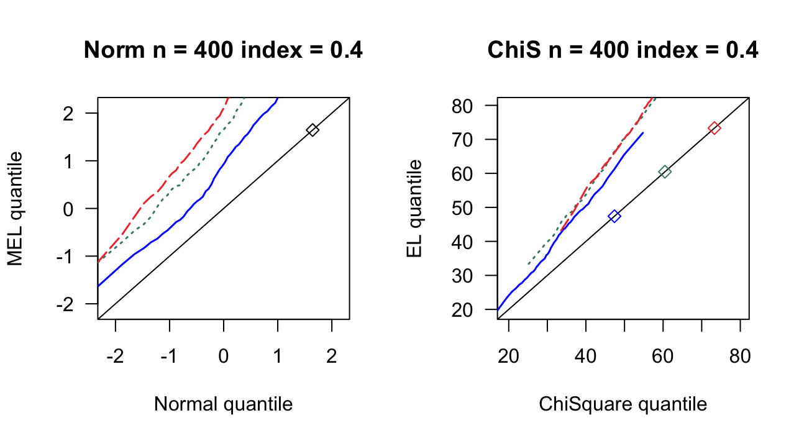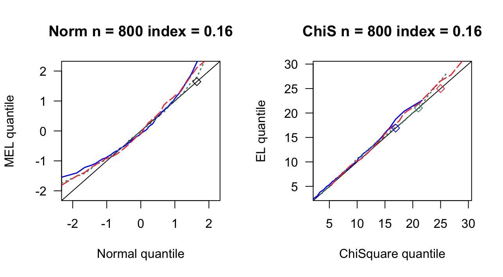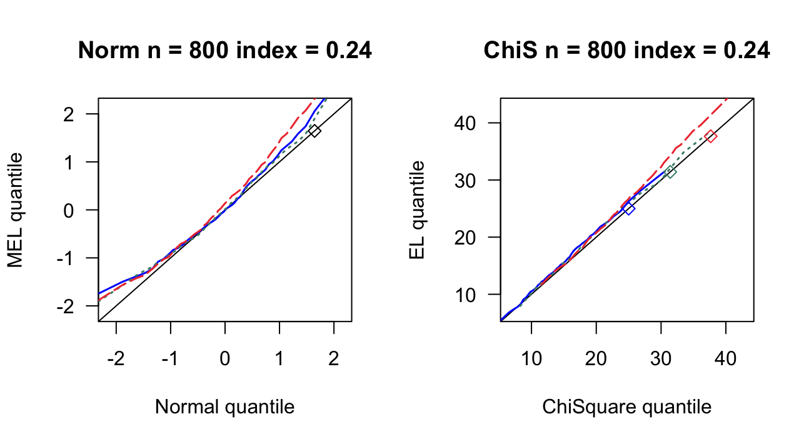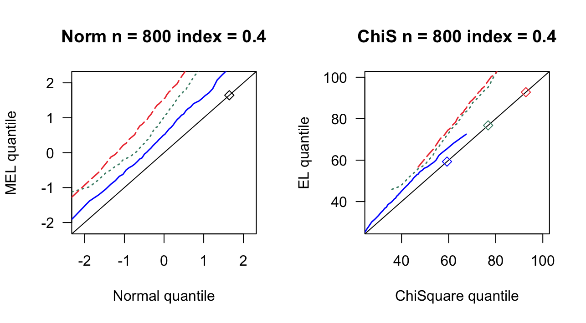 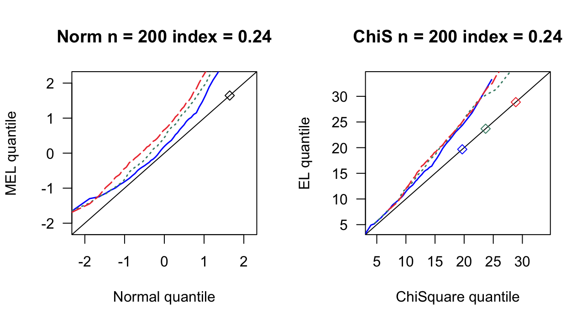
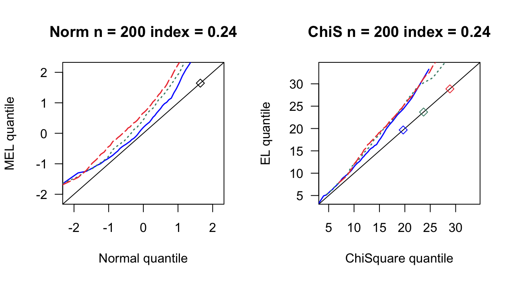3.2 运行代码
#===============================================
# High-dim linear model
#===============================================
rm(list = ls())
library('MASS')
source('GlambdaChen.R')
# ==================修改参数====================
nsim = 500
n = 400
index = 0.2
c = c(3,4,5)
ps = round(c*n^index)
# ==================开始模拟====================
EL = matrix(NA,nsim,length(ps))
colnames(EL)=c(paste0('p=',ps[1]),ps[2],ps[3])
MEL = matrix(NA,nsim,length(ps))
colnames(MEL)=c(ps[1],ps[2],ps[3])
cat('nsim =',nsim,'\n')
j = 0
for(p in ps){
j = j + 1
f1 = 0
mu = rep(0,p)
Sigma = diag(p)
for(k in 1:p){
for(l in 1:p){
if(k != l){Sigma[k,l] = 0.5}
}
}
for(i in 1:nsim){
# 估计方程赋值
X = mvrnorm(n,mu,Sigma)
e = rnorm(n)
# Y = X%*%theta + e
z = X*e
# 计算MEL值
lam = lambdaChen(z)
el = 2*sum(log(1+t(lam)%*%t(z)))
mel = (el-p)/sqrt(2*p)
if(abs(mel)<=qnorm(0.975)) f1 = f1 + 1
# 检验lam
# aa=1+t(lam)%*%t(z)
# glam=rowSums(t(z)/matrix(aa,p,n,byrow = TRUE))
# cat(m,max(abs(glam)),'\n')
EL[i,j] = el
MEL[i,j] = mel
}
cat('n =',n,'p =',p,'覆盖率',f1/nsim,'\n')
}
write.csv( EL, file = paste0('EL' ,n,index,'.csv'), row.names = FALSE) # 保存数据
write.csv(MEL, file = paste0('MEL',n,index,'.csv'), row.names = FALSE) # 保存数据
# ===================绘制QQ图====================
m = 50 # 分位数个数
as = (1:m-0.5)/m # 名义水平
par(mfrow = c(1, 2))
# 绘制正态QQ图
qas <- qnorm(as) # 正态分布的分位数点
c1 = sort(MEL[,1])[ceiling(as*nsim)] # mel的分位数点
c2 = sort(MEL[,2])[ceiling(as*nsim)]
c3 = sort(MEL[,3])[ceiling(as*nsim)]
plot(qas,qas,xaxs = 'i', yaxs = 'i',
yaxt = 'n', ann = F, type = 'l')
axis(2, las = 1)
title(main = paste0('Norm n = ',n,' index = ',index),
xlab = 'Normal quantile', ylab = 'MEL quantile')
lines(qas,c1,type='l',lty=1,lwd=1.5,col='blue1')
lines(qas,c2,type='l',lty=3,lwd=1.5,col='aquamarine4')
lines(qas,c3,type='l',lty=5,lwd=1.5,col='brown2')
points(qnorm(0.95),qnorm(0.95),pch=5)
# 绘制卡方QQ图
x <- seq(0,120,5) # 卡方的分位数点
c1 = sort(EL[,1])[ceiling(as*nsim)] # mel的分位数点
c2 = sort(EL[,2])[ceiling(as*nsim)]
c3 = sort(EL[,3])[ceiling(as*nsim)]
plot(x,x,xaxs = 'i', yaxs = 'i',
xlim =c(min(qchisq(as,ps[1])), max(qchisq(as,ps[3]))),
ylim =c(min(qchisq(as,ps[1])), max(qchisq(as,ps[3]))),
yaxt = 'n', ann = F, type = 'l')
axis(2, las = 1)
title(main = paste0('ChiS n = ',n,' index = ',index),
xlab = 'ChiSquare quantile', ylab = 'EL quantile')
lines(qchisq(as,ps[1]),c1,type='l',lty=1,lwd=1.5,col='blue1')
lines(qchisq(as,ps[2]),c2,type='l',lty=3,lwd=1.5,col='aquamarine4')
lines(qchisq(as,ps[3]),c3,type='l',lty=5,lwd=1.5,col='brown2')
points(qchisq(0.95,ps[1]),qchisq(0.95,ps[1]),pch=5,col='blue1')
points(qchisq(0.95,ps[2]),qchisq(0.95,ps[2]),pch=5,col='aquamarine4')
points(qchisq(0.95,ps[3]),qchisq(0.95,ps[3]),pch=5,col='brown2')